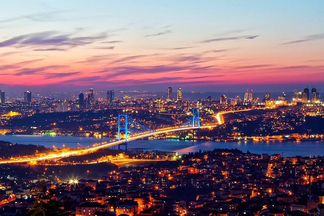
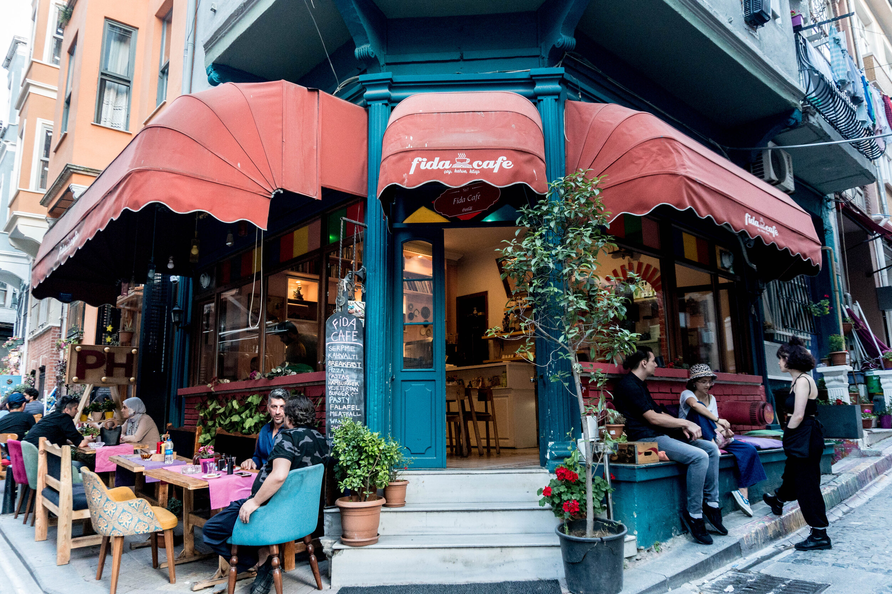
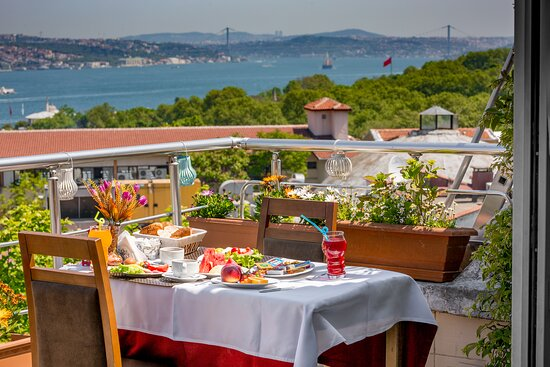
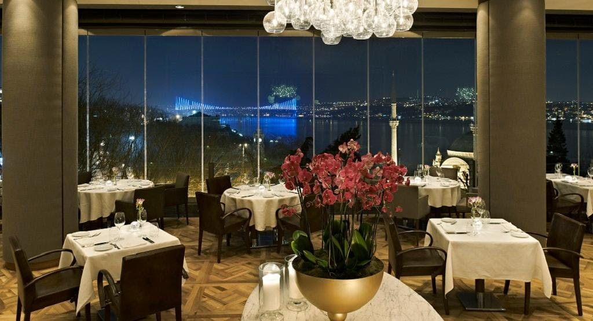

Why istanbul?
The City That Lies On Two Continents
Istanbul, the largest city in Turkey and the fifth-largest city in the world by population, is considered European, yet it occupies two different continents. One part of Istanbul lies in Europe and the other part lies in Asia. Istanbul’s European part is separated from its Asian part by the Bosphorus strait, a 31-km-long waterway that connects the Black Sea with the Sea of Marmara, and forms a natural boundary between the two continents.
Two suspension bridges across the Bosphorus—the Bosphorus Bridge and the Fatih Sultan Mehmet Bridge, also called Bosphorus Bridge II—connect the two sides, yet many tourists prefer to visit the European side of Istanbul because of its historical significance.
CAFES
My favorite cafes in Istanbul

FIDA CAFÉ
This café on a corner in the colourful Balat neighbourhood was sheer perfection. Listening to Fleetwood Mac as I sat outside eating delicious vegetarian options. Fida ticked all the boxes for an ideal summer evening.
Adress:
Balat, Vodina Cd. 7/A, 34087 Fatih/İstanbul
What I like about it
You have to try the falafel here! I didn’t actually have a coffee at Fida, but I can speak to the atmosphere and the food of the place, and both were above average by anyone’s standards.

BUHARA FİSH MEAT HOUSE ROOF
Good place to visit in the center of Istanbul. Near the Great Bazar. Atention of the crew is good and pretty fast. Offers you some bread at the beggining and some te at the end.
Adress:
Alemdar, Nuru Osmaniye Cd. NO : 5, 34440 Fatih/İstanbul
What I like about it
All dishes served were very well presented and it was delicious . The service was excellent. The view from the restaurant was really stunning and I found it very relaxing.

Râna by Topaz
Green garden restaurant is the best place you can find in Instanbul! You feel all the time you are having dinner with your loving family. You find here very friendly staff, their hospitality is the best you can ever experience. Highly recommended.
Adress:
Ömer Avni, İnönü Cd. No:50, 34427 Beyoğlu/İstanbul
What I like about it
Great food and shisha! Great atmosphere to chill with friends. Beautiful decorations make you feel like home.
Gallery
Photos from Istanbul